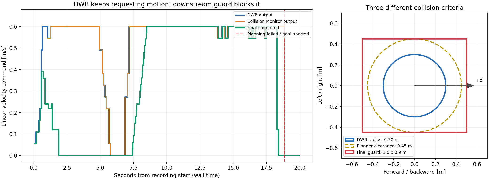

2026-10-20 · Gazebo 재생 후 약 20초 · 읽기 전용 기록

도식의 치수는 설정 기본값이다. 1cm footprint padding과 grid-cell 여유는 생략했다. 속도는 명령이며 실제 로봇 속도와 같다는 뜻은 아니다.
| 기록 시각 | 확인한 상태 |
|---|---|
| 약 1.9~7.4초 | 예측 지도 충돌 / 현재 지도 충돌로 최종 명령 차단. 상류 DWB·Collision Monitor 명령은 대부분 유지. |
| 약 8.5~18.2초 | 차단 해제, 최종 전진 명령 약 0.6m/s 통과. |
| 약 18.4초 | 다시 costmap_collision. |
| 약 18.8초 | Height planner: grid start invalid → Goal failed. |
원래 planner 오류는 시작점이 거절된 세부 이유를 생략한다. 이 기록만으로 추가 clearance, 높이 관측 누락, 지도 정합 중 어느 조건이 마지막 시작점을 거절했는지는 확정하지 않는다. 최종 snapshot은 정지 시작 순간과 같지 않으며, 마지막 pose의 정상 판정으로 앞선 충돌 경고를 부정할 수 없다.
현재 실행 world의 원형 장애물 corridor_nav::link_6와 아래 벽 link_2_clone_0_clone 사이 기하학적 최소 간격은 약 1.63m이다. 물리 공간이 무조건 통과 불가능한 폭은 아니지만, 추정 pose·경로·회전 궤적·보행 외곽과 실제 장애물 관측이 모두 맞아야 한다.
| 단계 | 현재 기준 |
|---|---|
| DWB BaseObstacle | robot_radius=0.30m 기반 inflation 비용으로 궤적 중심 검사 |
| Height planner | costmap_clearance_m=0.45m 추가 제외 영역 |
| 최종 지도 guard | 1.0×0.9m 사각형과 1초 예상 궤적 검사 |
이 조합에서는 DWB가 유효하다고 선택한 궤적을 최종 guard가 거절할 수 있다. 분홍 inflation 전체가 통행 금지인 것은 아니다. 실제 다리 외측 및 보행 중 외곽을 정하고 모든 단계에 같은 의미의 충돌 조건을 전달하는 것이 다음 수정이다. 사각형을 유지한다면 DWB의 ObstacleFootprint 검사도 검토해야 한다. 현재 폭을 무조건 작게 만들거나 센서 안전 장치를 제거하지 않았다.
공식 구현: BaseObstacle · ObstacleFootprint.
navigate.xml, navigate_many.xml에 제한된 재시도를 추가했다. 계획 또는 추종 실패 시 추종을 중단하고 wall-clock 1초 대기 후 같은 목표를 새로 계획한다. 최초 시도 + 최대 30회 재시도이며 총 30초 제한은 아니다. 취소하면 재시도도 종료한다. 이미 ABORTED인 목표를 자동으로 복원하지 않는다.
빌드 성공. 실제 Nav2 BT 제어 플러그인과 모의 planner/controller로 새 회귀 테스트 10개 통과. 기존 Python 테스트 35개 통과. 계획 실패 중 이전 추종 halt, 추종 실패 후 새 계획, 원래 목표 유지, 재시도 제한, 취소 동작을 확인했다. 실제 좁은 통로 탈출 주행은 이 수정 후 검증하지 않았다.
현재 사용자가 실행한 navigation은 재시작하지 않았다. navigation launch를 재시작하고 새 목표를 지정하면 수정된 기본 BT를 확실히 사용할 수 있다. 충돌 범위 불일치, 지속적인 잘못된 시작점, 실제 탈출 궤적 생성은 남은 작업이다. 후진·제자리 회전·지도 장애물 삭제를 자동 실행하지 않는다.